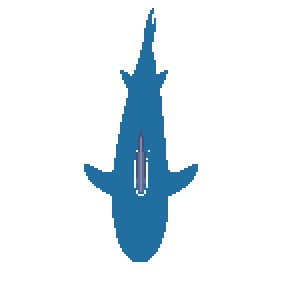
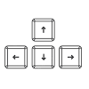
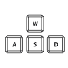

00
:
The shark is far to the EAST
The shark is close to the EAST
The shark is very close to the EAST
TRICK: If more than one direction of the radar turns red, it means that the shark is VERY CLOSE
 Indicates how many sharks remain to be marked with a plank
Indicates how much scrap you have collected
Use  to move around the map
Use  to build a platform with the collected scrap
You will win the game if all the sharks are marked with a plank.
You will lose if a shark eats you
CAREFUL! If you use ALL the scrap to build platforms your final score will be very low
 You will lose if a shark eats you
You will lose if a shark eats you